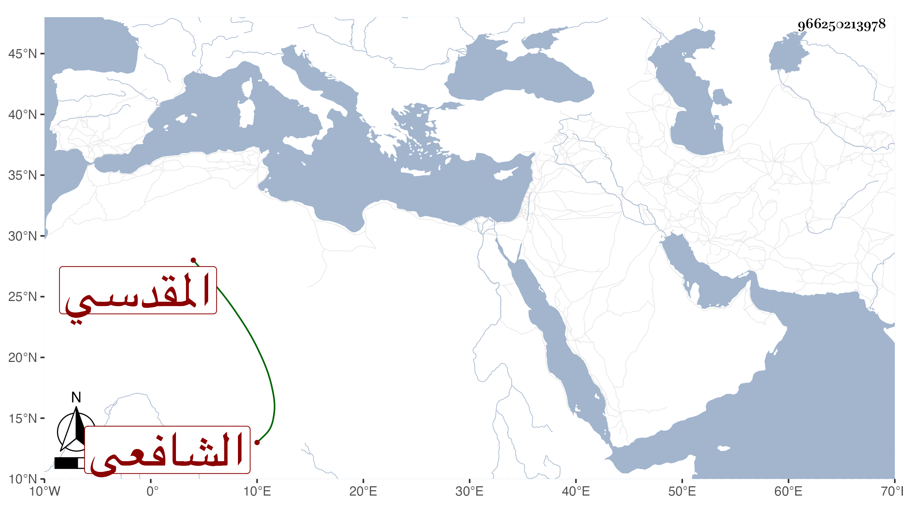

0902Sakhawi.DawLamic.ITO20230111-ara1.EIS1600.966250213978
Biography ID: 966250213978
581
أحمد بن محمد بن الأوتاري المقدسي الشافعي . ممن كتب بخطه تقريضا لمجموع البدري في سنة ثمان وسبعين فكان من نظمه فيه :
| لنا مجموع قد جمع المعاني | وديوان أتى في الحسن مفرد |
| ففي ذا الباب جدا حاز حدا | فهل لك طاقة الباب المجدد |
وكذا كتب عليه :
| مجموعنا رائق بهي | له معان بها تفرد |
| رأيت مجموع كل شخص | قد غار منه وما تجلد |
